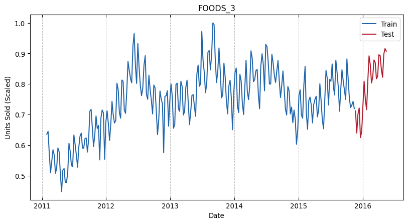
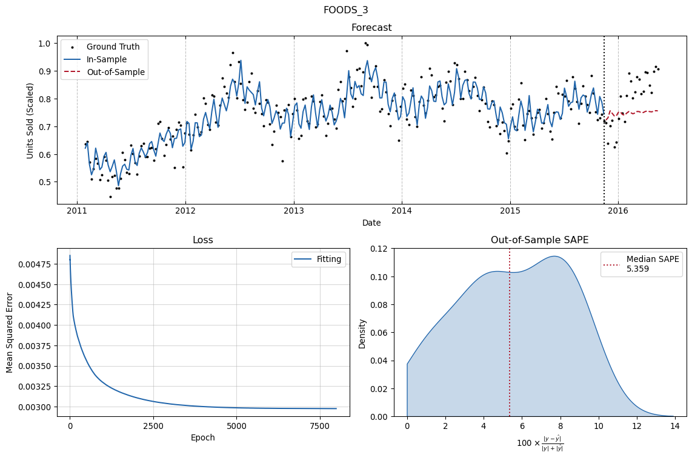
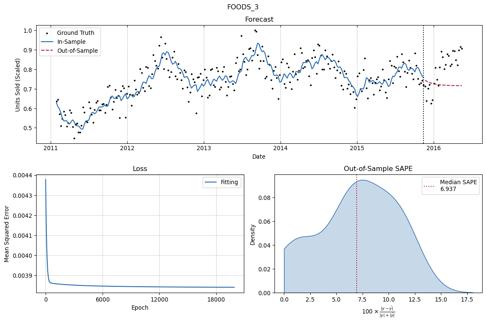
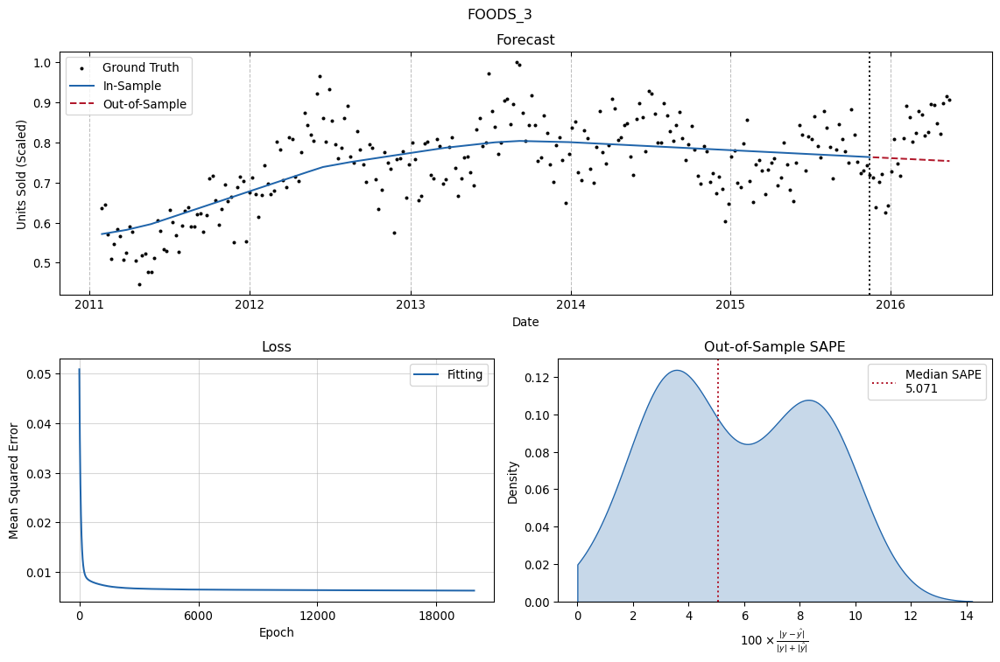
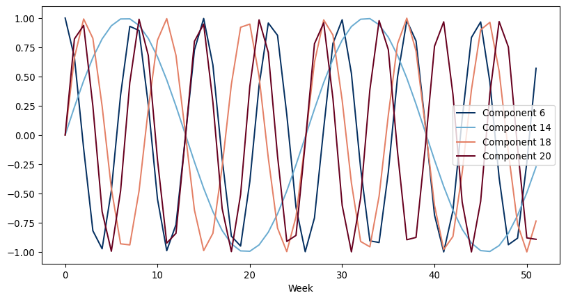
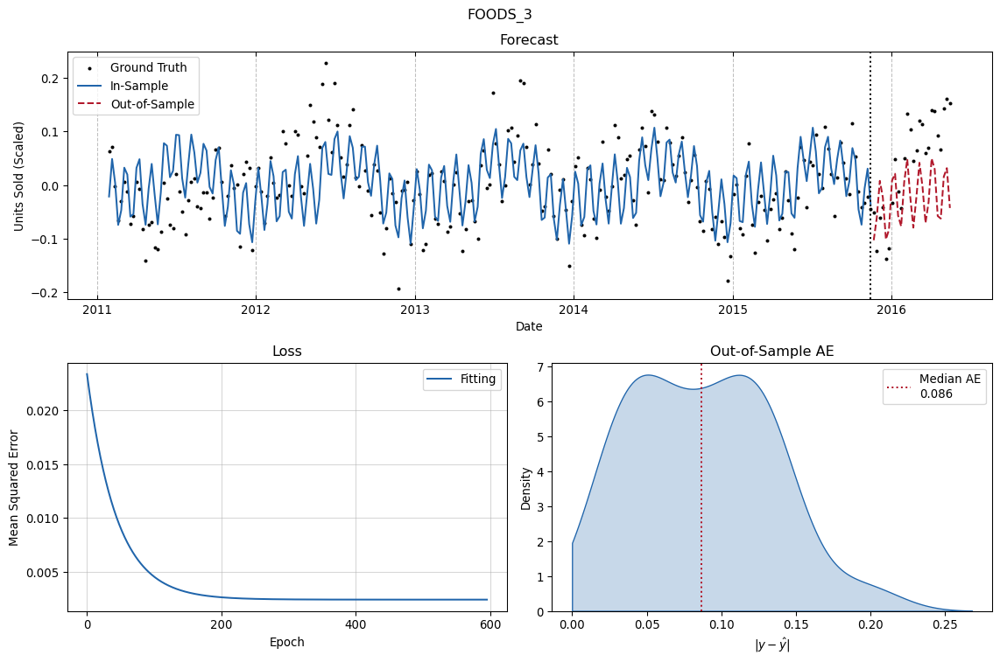
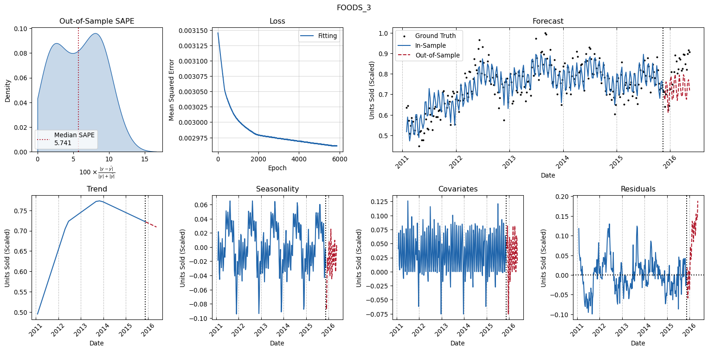
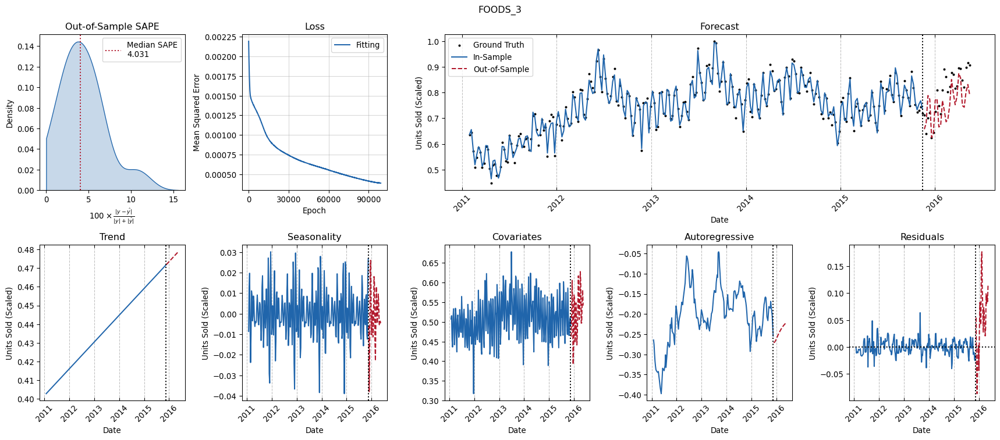
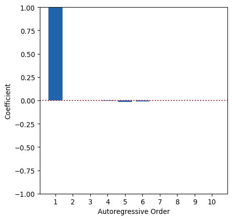

Show supplementary code
%load_ext watermark
import numpy as np
import matplotlib.pyplot as pltValerio Bonometti
November 23, 2026
from typing import Any, Callable, Dict, List, Optional, Tuple
from functools import partial
import jax
import jax.numpy as jnp
from jax import jit, random, value_and_grad
from jax.lax import scan
from jax.tree import leaves
from jax.tree_util import tree_map
from jax.typing import ArrayLike
KeyArray = jax.Array
CMAP = "RdBu_r"
BLUE = plt.get_cmap(CMAP)(0.1)
RED = plt.get_cmap(CMAP)(0.9)
def random_gaussian(
init_state: Tuple[Tuple[int, ...], Any], random_key: ArrayLike, sigma: float = 0.1
) -> ArrayLike:
"""Initialize with random values sampled from a gaussian distribution with mean
zero and standard deviation of sigma.
Args:
init_state: state variable used for initialisation, a tuple with shape
values is always expected.
random_key: key for pseudo-random number generator.
sigma: standard deviation of the gaussian distribution.
Returns:
params: values returned as initial values for parameters.
"""
params_shape, _ = init_state
params = random.normal(key=random_key, shape=params_shape) * sigma
return params
@jit
def linear(x: ArrayLike) -> ArrayLike:
"""Activation function returning the identity of x
Args:
x: input to the activation function
Returns:
x: output of the activation function
"""
return x
@jit
def sigmoid(x: ArrayLike) -> ArrayLike:
"""Activation function transforming logits into probabilities (range 0, 1)
The textbook form 1 / (1 + exp(-x)) overflows for large negative x and
gives NaN gradients there, so we use the equivalent exp(-log(1 + exp(-x)))
which stays finite everywhere.
Args:
x: input to the activation function
Returns:
x: output of the activation function
"""
return jnp.exp(-jnp.logaddexp(0.0, -x))
@jit
def l1(params: Any) -> ArrayLike:
"""L1 (lasso) penalty: sum of the absolute values of all the parameters.
Args:
params: pytree (e.g. dictionary) of parameters.
Returns:
l1_loss: the penalty value.
"""
l1_loss = sum([jnp.sum(jnp.abs(leaf)) for leaf in leaves(params)])
return l1_loss
@jit
def l2(params: Any) -> ArrayLike:
"""L2 (ridge) penalty: sum of the squared values of all the parameters.
Args:
params: pytree (e.g. dictionary) of parameters.
Returns:
l2_loss: the penalty value.
"""
l2_loss = sum([jnp.sum(jnp.square(leaf)) for leaf in leaves(params)])
return l2_loss
def get_regularizer(reg_type: str) -> Callable:
"""Return the regularization penalty matching a string identifier.
Args:
reg_type: either "l1" (lasso) or "l2" (ridge).
Returns:
reg_function: the corresponding penalty function.
"""
if reg_type not in REGULARIZERS:
raise ValueError(
f"reg_type must be one of {list(REGULARIZERS)}, got {reg_type!r}"
)
return REGULARIZERS[reg_type]
REGULARIZERS = {"l1": l1, "l2": l2}
@jit
def mean_squared_error(y: ArrayLike, yhat: ArrayLike) -> ArrayLike:
"""Mean squared error between targets and predictions.
Args:
y: observed values.
yhat: predicted values.
Returns:
mse: the squared error averaged over all the values.
"""
return jnp.mean(jnp.square(jnp.reshape(y, yhat.shape) - yhat))from tqdm import tqdm
def momentum_gradient_descent(
learning_rate: float, beta: float = 0.9
) -> Tuple[Callable, Callable, Callable]:
"""Gradient descent with momentum, the optimizer introduced in the
previous chapters.
Args:
learning_rate: step size applied to the gradients.
beta: fraction of the previous update carried over to the current one.
Defaults to 0.9.
Returns:
init_state, update_state, get_params: optimizer functions as expected by fit.
"""
@jit
def init_state(params):
previous_updates = tree_map(lambda param: jnp.zeros_like(param), params)
return previous_updates, params
@jit
def update_state(grads, current_state):
previous_updates, previous_params = current_state
current_updates = tree_map(
lambda grad, previous_update: (beta * previous_update)
+ (grad * learning_rate),
grads,
previous_updates,
)
current_params = tree_map(
lambda param, update: param - update, previous_params, current_updates
)
return current_updates, current_params
@jit
def get_params(state):
_, current_params = state
return current_params
return init_state, update_state, get_params
class EarlyStopping:
def __init__(self, tol: int = 10, min_delta: float = 1e-8):
"""Naive implementation of an early stopping callback.
Args:
tol: number of consecutive iterations without improvement before
triggering the stop criteria. Defaults to 10.
min_delta: minimum decrease in loss, with respect to the best loss
seen so far, required for considering an iteration an
improvement. Defaults to 1e-8.
"""
self.tol = tol
self.min_delta = min_delta
self.reset()
def reset(self) -> None:
"""Restore the initial state so the same instance can be re-used across fits."""
self.best_loss = float("inf")
self.count = 0
self.improved = False
self.stop = False
def evaluate(self, current_loss: float) -> bool:
"""Update the state of the callback given the most recent loss.
Args:
current_loss: loss value obtained at the current iteration.
Returns:
stop: True if the loss has not improved for `tol` consecutive iterations.
"""
current_loss = float(current_loss)
self.improved = (self.best_loss - current_loss) > self.min_delta
if self.improved:
self.best_loss = current_loss
self.count = 0
else:
self.count += 1
self.stop = self.count >= self.tol
return self.stop
def n_samples(X: Any) -> int:
"""Number of samples in X, which can be an array or a pytree of arrays
sharing the same size along the first axis."""
return leaves(X)[0].shape[0]
def take_samples(X: Any, index: Any) -> Any:
"""Index the first axis of every array in the pytree X."""
return tree_map(lambda array: array[index], X)
def shuffle_arrays(list_arrays: List[Any], random_key: ArrayLike) -> List[Any]:
"""Shuffle a list of arrays (or pytrees of arrays) along their first axis,
applying the same permutation to all of them so that rows stay aligned.
Args:
list_arrays: arrays or pytrees of arrays sharing the same size along
the first axis.
random_key: key for pseudo-random number generator.
Returns:
shuffled_arrays: the arrays in list_arrays with permuted rows.
"""
random_idx = random.permutation(random_key, n_samples(list_arrays[0]))
return [take_samples(arrays, random_idx) for arrays in list_arrays]
def create_batches(
X: Any, y: ArrayLike, random_key: ArrayLike, batch_size: Optional[int] = None
) -> Tuple[List[Any], List[ArrayLike]]:
"""Shuffle X and y and split them into mini-batches.
Args:
X: input data, an array or a pytree of arrays with n_samples along
the first axis.
y: target data with n_samples along the first axis.
random_key: key for pseudo-random number generator used for shuffling.
batch_size: size of each batch of data. If None the whole data is used
as a single batch. When n_samples is not a multiple of batch_size
the remainder is spread across batches. Defaults to None.
Returns:
X_batched, y_batched: lists of batches of X and y.
"""
if batch_size is None:
return [X], [y]
X, y = shuffle_arrays(list_arrays=[X, y], random_key=random_key)
n_batches = max(n_samples(X) // batch_size, 1)
batches = [
slice(batch[0], batch[-1] + 1)
for batch in np.array_split(np.arange(n_samples(X)), n_batches)
]
return [take_samples(X, batch) for batch in batches], [y[batch] for batch in batches]
def fit_step(
X: Any,
y: ArrayLike,
backward: Callable,
current_state: Tuple[Any, ...],
update_state: Callable,
get_params: Callable,
random_state: ArrayLike,
) -> Tuple[ArrayLike, Tuple[Any, ...], Any]:
"""Perform a single optimization step on one batch of data.
Args:
X: input data.
y: target data.
backward: function returning loss and gradients given X, y and params.
current_state: current state of the optimizer.
update_state: function updating the optimizer state given the gradients.
get_params: function extracting the parameters from the optimizer state.
random_state: key for pseudo-random number generator.
Returns:
loss, current_state, grads: loss before the update, updated optimizer
state and gradients used for the update.
"""
current_params = get_params(state=current_state)
loss, grads = backward(
X=X, y=y, current_params=current_params, random_state=random_state
)
current_state = update_state(grads, current_state)
return loss, current_state, grads
def fit_step_on_batch(
X: List[Any],
y: List[ArrayLike],
backward: Callable,
current_state: Tuple[Any, ...],
update_state: Callable,
get_params: Callable,
random_state: ArrayLike,
) -> Tuple[ArrayLike, Tuple[Any, ...], Any]:
"""Perform one optimization step per batch, i.e. a full epoch.
Args:
X: list of batches of input data.
y: list of batches of target data.
backward: function returning loss and gradients given X, y and params.
current_state: current state of the optimizer.
update_state: function updating the optimizer state given the gradients.
get_params: function extracting the parameters from the optimizer state.
random_state: key for pseudo-random number generator.
Returns:
loss, current_state, grads: loss averaged across batches (weighted by
batch size), updated optimizer state and gradients of the last batch.
"""
partialized_fit_step = partial(
fit_step,
backward=backward,
update_state=update_state,
get_params=get_params,
)
batch_keys = random.split(random_state, len(X))
total_loss, total_samples = 0.0, 0
for X_batch, y_batch, batch_key in zip(X, y, batch_keys):
loss, current_state, grads = partialized_fit_step(
X=X_batch,
y=y_batch,
current_state=current_state,
random_state=batch_key,
)
total_loss += loss * n_samples(X_batch)
total_samples += n_samples(X_batch)
return total_loss / total_samples, current_state, grads
def fit(
X: Any,
y: ArrayLike,
backward: Callable,
compute_loss: Callable,
start_params: Any,
optimizer: Tuple[Callable, Callable, Callable],
epochs: int,
stopper: EarlyStopping,
batch_size: Optional[int] = None,
verbose: int = 0,
random_key: int = 666,
track_grads: bool = False,
validation_size: float = .2
):
"""Fit a model to the data, optionally using a hold-out set for early stopping.
Args:
X: input data, an array or a pytree of arrays with n_samples along
the first axis.
y: target data with n_samples along the first axis.
backward: function returning loss and gradients given X, y and params.
compute_loss: function returning the loss given X, y and params, used
on the validation set where gradients are not needed.
start_params: initial values of the parameters.
optimizer: tuple of (init_state, update_state, get_params) functions.
epochs: maximum number of passes over the data.
stopper: early stopping callback evaluated on the validation loss, or
on the fitting loss when validation_size is 0.
batch_size: size of each batch of data, None for full-batch. Defaults to None.
verbose: show a progress bar updated every `verbose` epochs, 0 disables it.
Defaults to 0.
random_key: seed for the pseudo-random number generator. Defaults to 666.
track_grads: whether to store the gradients at every epoch. Defaults to False.
validation_size: fraction of the data held out for validation. When 0
the data is neither shuffled nor split, as required by models whose
predictions depend on the order of the samples. Defaults to .2.
Returns:
params, history (, grads_history): parameters achieving the lowest
monitored loss, per-epoch fitting (and validation) losses and,
if track_grads is True, per-epoch gradients.
"""
n_validation = int(n_samples(X) * validation_size)
if validation_size and not 0 < n_validation < n_samples(X):
raise ValueError(
f"validation_size={validation_size} leaves {n_validation} of {n_samples(X)} "
"samples for validation, at least one sample is needed in each split."
)
history = []
grads_history = []
random_state = random.PRNGKey(random_key)
stopper.reset()
if n_validation:
random_state, split_key = random.split(random_state)
X, y = shuffle_arrays(list_arrays=[X, y], random_key=split_key)
X_fitting, X_validation = take_samples(X, slice(n_validation, None)), take_samples(X, slice(None, n_validation))
y_fitting, y_validation = y[n_validation:], y[:n_validation]
init_state, update_state, get_params = optimizer
current_state = init_state(params=start_params)
best_params = get_params(state=current_state)
pbar = tqdm(range(epochs), desc="Loss", disable=verbose == 0)
for epoch in pbar:
random_state, batches_key, step_key, validation_key = random.split(random_state, 4)
X_fitting_batched, y_fitting_batched = create_batches(
X=X_fitting,
y=y_fitting,
random_key=batches_key,
batch_size=batch_size,
)
loss, current_state, grads = fit_step_on_batch(
X=X_fitting_batched,
y=y_fitting_batched,
backward=backward,
current_state=current_state,
update_state=update_state,
get_params=get_params,
random_state=step_key,
)
epoch_history = {"fitting_loss": float(loss)}
if n_validation:
epoch_history["validation_loss"] = float(
compute_loss(
X=X_validation,
y=y_validation,
current_params=get_params(state=current_state),
random_state=validation_key,
)
)
history.append(epoch_history)
if track_grads:
grads_history.append(grads)
if verbose and epoch % verbose == 0:
pbar.set_description(
" - ".join(f"{key} {value:.4f}" for key, value in epoch_history.items())
)
stop = stopper.evaluate(
current_loss=epoch_history.get("validation_loss", epoch_history["fitting_loss"])
)
if stopper.improved:
best_params = get_params(state=current_state)
if stop:
break
if track_grads:
return best_params, history, grads_history
else:
return best_params, historyimport pandas as pd
import seaborn as sns
from matplotlib import gridspec
def train_test_ts_split(
time_series: ArrayLike, test_size: int
) -> Tuple[ArrayLike, ArrayLike]:
"""Split a time series in train and test sets given the size of the
test set. The size needs to be specified in number of time steps.
Args:
time_series: the temporal series to be splitted.
test_size: the size of the test set.
Returns:
time_series_train, time_series_test: the generated train and test
time series.
"""
time_series_train, time_series_test = (
time_series[:-test_size],
time_series[-test_size:],
)
return time_series_train, time_series_test
def absolute_error(y: ArrayLike, yhat: ArrayLike) -> ArrayLike:
"""Compute the absolute error between ground truth values and predictions.
Args:
y: ground truth values
yhat: prediction values
Returns:
ae: absolute error between y and yhat
"""
return np.abs(np.asarray(y) - np.asarray(yhat))
def symmetric_absolute_percentage_error(y: ArrayLike, yhat: ArrayLike) -> ArrayLike:
"""Compute the symmetric version of the absolute percentage error
between ground truth values and predictions. It is less biased than
the absolute percentage error and bounded between 0 and 100.
Args:
y: ground truth values
yhat: prediction values
Returns:
sape: symmetric absolute percentage error between y and yhat
"""
y, yhat = np.asarray(y), np.asarray(yhat)
return (np.abs(y - yhat) / (np.abs(y) + np.abs(yhat))) * 100
ERRORS = {
"SAPE": (
symmetric_absolute_percentage_error,
r"$100 \times \frac{|y - \hat{y}|}{|y| + |\hat{y}|}$",
),
"AE": (absolute_error, r"$|y - \hat{y}|$"),
}
def _format_time_axis(ax: Any) -> None:
"""Shared styling of the axes having dates on the x axis."""
ax.tick_params(direction="in", top=True, axis="x")
ax.grid(visible=True, which="major", axis="x", color="k", alpha=0.25, linestyle="--")
ax.set_xlabel("Date")
def _plot_loss_history(ax: Any, history: List[Dict[str, float]], loss: str) -> None:
"""Plot the losses per epoch as returned by fit."""
for (key, label), color in zip(
[("fitting_loss", "Fitting"), ("validation_loss", "Validation")], [BLUE, RED]
):
if key in history[0]:
ax.plot([epoch[key] for epoch in history], label=label, color=color)
ax.set_title("Loss")
ax.set_ylabel(loss)
ax.set_xlabel("Epoch")
ax.xaxis.set_major_locator(plt.MaxNLocator(4))
ax.grid(alpha=0.5)
ax.legend()
def _plot_in_out_sample(
ax: Any,
time_series_train: pd.Series,
time_series_test: pd.Series,
values_insample: ArrayLike,
values_outsample: ArrayLike,
ylabel: str,
) -> None:
"""Plot in-sample and out-of-sample values, split by a vertical line."""
ax.plot(time_series_train.index, np.asarray(values_insample), color=BLUE, label="In-Sample")
ax.plot(
time_series_test.index,
np.asarray(values_outsample),
color=RED,
linestyle="--",
label="Out-of-Sample",
)
ax.axvline(time_series_train.index.max(), color="k", linestyle=":")
ax.set_ylabel(ylabel)
_format_time_axis(ax)
def _plot_forecast(
ax: Any,
time_series_train: pd.Series,
time_series_test: pd.Series,
forecast_insample: ArrayLike,
forecast_outsample: ArrayLike,
ylabel: str,
) -> None:
"""Plot the observed time series together with in-sample and out-of-sample forecasts."""
ax.scatter(time_series_train.index, time_series_train.values, s=4, color="k", label="Ground Truth")
ax.scatter(time_series_test.index, time_series_test.values, s=4, color="k")
_plot_in_out_sample(
ax, time_series_train, time_series_test, forecast_insample, forecast_outsample, ylabel
)
ax.set_title("Forecast")
ax.legend()
def _plot_forecast_error(ax: Any, y: ArrayLike, yhat: ArrayLike, error: str) -> None:
"""Plot the distribution of the out-of-sample errors and their median."""
error_function, xlabel = ERRORS[error]
errors = error_function(y=y, yhat=yhat)
median_error = np.median(errors)
sns.kdeplot(errors, ax=ax, clip=(0, None), color=BLUE, fill=True)
ax.axvline(median_error, linestyle=":", color=RED, label=f"Median {error}\n{median_error:.3f}")
ax.set_title(f"Out-of-Sample {error}")
ax.set_xlabel(xlabel)
ax.set_ylabel("Density")
ax.legend()
def visualize_univariate_time_series(
time_series: pd.Series,
ax: Optional[Any] = None,
ylabel: str = "Units Sold (Scaled)",
figsize: Tuple[int, int] = (10, 5),
**plot_kwargs,
) -> Any:
"""Plot a time series indexed by date.
Args:
time_series: the time series to plot.
ax: axes to draw on, a new figure is created if None. Defaults to None.
ylabel: label of the y axis. Defaults to "Units Sold (Scaled)".
figsize: size of the figure when ax is None. Defaults to (10, 5).
**plot_kwargs: keyword arguments passed to ax.plot.
Returns:
ax: the axes containing the plot.
"""
if ax is None:
_, ax = plt.subplots(1, 1, figsize=figsize)
ax.plot(time_series.index, time_series, **plot_kwargs)
_format_time_axis(ax)
ax.set_ylabel(ylabel)
return ax
def visualize_time_series_performance(
time_series_train: pd.Series,
time_series_test: pd.Series,
forecast_insample: ArrayLike,
forecast_outsample: ArrayLike,
loss: str,
history: List[Dict[str, float]],
error: str = "SAPE",
ylabel: str = "Units Sold (Scaled)",
figsize: Tuple[int, int] = (12, 8),
) -> Any:
"""Plot the forecasts of a model, its loss history and the distribution of
its out-of-sample errors.
Args:
time_series_train: observed time series used for fitting.
time_series_test: observed time series used for testing.
forecast_insample: model predictions over the training period.
forecast_outsample: model forecasts over the testing period.
loss: name of the loss, used as y label of the loss history.
history: per-epoch losses as returned by fit.
error: error metric shown for the testing period, one of the keys
of ERRORS. Defaults to "SAPE".
ylabel: label of the y axis of the time series. Defaults to
"Units Sold (Scaled)".
figsize: size of the figure. Defaults to (12, 8).
Returns:
fig: the generated figure.
"""
fig = plt.figure(tight_layout=True, figsize=figsize)
gs = gridspec.GridSpec(2, 2, figure=fig)
_plot_forecast(
fig.add_subplot(gs[0, :]),
time_series_train,
time_series_test,
forecast_insample,
forecast_outsample,
ylabel,
)
_plot_loss_history(fig.add_subplot(gs[1, 0]), history, loss)
_plot_forecast_error(fig.add_subplot(gs[1, 1]), time_series_test, forecast_outsample, error)
return fig
def visualize_time_series_gam_performance(
time_series_train: pd.Series,
time_series_test: pd.Series,
components_insample: Dict[str, ArrayLike],
components_outsample: Dict[str, ArrayLike],
loss: str,
history: List[Dict[str, float]],
error: str = "SAPE",
ylabel: str = "Units Sold (Scaled)",
figsize: Tuple[int, int] = (16, 8),
) -> Any:
"""Plot the forecasts of an additive model, its loss history, the distribution
of its out-of-sample errors, each of its components and its residuals.
Args:
time_series_train: observed time series used for fitting.
time_series_test: observed time series used for testing.
components_insample: model components over the training period, the
forecast is their sum.
components_outsample: model components over the testing period.
loss: name of the loss, used as y label of the loss history.
history: per-epoch losses as returned by fit.
error: error metric shown for the testing period, one of the keys
of ERRORS. Defaults to "SAPE".
ylabel: label of the y axis of the time series. Defaults to
"Units Sold (Scaled)".
figsize: size of the figure. Defaults to (16, 8).
Returns:
fig: the generated figure.
"""
forecast_insample = sum(components_insample.values())
forecast_outsample = sum(components_outsample.values())
fig = plt.figure(tight_layout=True, figsize=figsize)
columns = max(4, len(components_insample) + 1)
gs = gridspec.GridSpec(2, columns, figure=fig)
_plot_forecast_error(fig.add_subplot(gs[0, 0]), time_series_test, forecast_outsample, error)
_plot_loss_history(fig.add_subplot(gs[0, 1]), history, loss)
_plot_forecast(
fig.add_subplot(gs[0, 2:]),
time_series_train,
time_series_test,
forecast_insample,
forecast_outsample,
ylabel,
)
for column, component_name in enumerate(components_insample):
ax_component = fig.add_subplot(gs[1, column])
_plot_in_out_sample(
ax_component,
time_series_train,
time_series_test,
components_insample[component_name],
components_outsample[component_name],
ylabel,
)
ax_component.set_title(component_name.replace("_", " ").title())
ax_residuals = fig.add_subplot(gs[1, -1])
_plot_in_out_sample(
ax_residuals,
time_series_train,
time_series_test,
time_series_train.values - np.asarray(forecast_insample),
time_series_test.values - np.asarray(forecast_outsample),
ylabel,
)
ax_residuals.axhline(0, color="k", linestyle=":")
ax_residuals.set_title("Residuals")
for ax in fig.axes:
if ax.get_xlabel() == "Date":
ax.tick_params(axis="x", rotation=45)
return fig@jit
def relu(x: ArrayLike) -> ArrayLike:
"""Activation function returning the maximum between 0 and x (range 0, inf)
Args:
x: input to the activation function
Returns:
array: output of the activation function
"""
return jnp.maximum(0, x)
def dense(
weights_init_method: Callable, bias_init_method: Callable
) -> Tuple[Callable, ...]:
"""Fully connected layer computing X @ weights + bias.
Args:
weights_init_method: initializer for the weights.
bias_init_method: initializer for the bias.
Returns:
init_params, forward: functions for initialising the parameters and
computing the layer output.
"""
@partial(jit, static_argnums=(0, 1))
def init_params(
input_units: int, hidden_units: int, prngkey: KeyArray
) -> Dict[str, ArrayLike]:
"""Initialize weights and bias.
Args:
input_units: size of the last dimension of the input.
hidden_units: size of the output.
prngkey: key for pseudo-random number generator.
Returns:
params: dictionary with weights of shape (input_units, hidden_units)
and bias of shape (hidden_units,).
"""
weights_key, bias_key = random.split(prngkey)
params = {
"weights": weights_init_method(
init_state=((input_units, hidden_units), input_units),
random_key=weights_key,
),
"bias": bias_init_method(
init_state=((hidden_units,), None), random_key=bias_key
),
}
return params
@jit
def forward(
X: ArrayLike, current_params: Dict[str, ArrayLike], random_state: KeyArray
) -> ArrayLike:
"""Compute the affine transformation of the input.
Args:
X: input with shape (..., input_units).
current_params: dictionary of parameters.
random_state: key for pseudo-random number generator (unused, kept
for API compatibility with stochastic layers).
Returns:
theta: output with shape (..., hidden_units).
"""
theta = jnp.dot(X, current_params["weights"]) + current_params["bias"]
return theta
return init_params, forward
def multilayer_perceptron(
layers: Tuple[int, ...],
weights_init_method: Callable,
bias_init_method: Callable,
hidden_link_function: Callable,
link_function: Callable,
loss_function: Callable,
prngkey: KeyArray,
reg_type: str = "l2",
reg_strength: float = 0.01,
) -> Tuple[Callable, ...]:
"""Multilayer perceptron made of dense layers.
Args:
layers: number of hidden units of each hidden layer.
weights_init_method: initializer for the weights of every layer.
bias_init_method: initializer for the bias of every layer.
hidden_link_function: activation applied after every hidden layer.
link_function: inverse link function applied to the output layer.
loss_function: loss comparing targets and predictions, taking y and yhat.
prngkey: key for pseudo-random number generator used for initialisation.
reg_type: penalty applied to the weights (not the biases), either "l1"
(lasso) or "l2" (ridge). Defaults to "l2".
reg_strength: multiplier of the regularization penalty. Defaults to 0.01.
Returns:
init_params, forward, compute_loss, backward, extract_embedding: functions
for initialising the parameters, computing predictions, computing the
loss, computing loss and gradients and computing the activations of
a hidden layer.
"""
dense_init_params, dense_forward = dense(
weights_init_method=weights_init_method,
bias_init_method=bias_init_method,
)
reg_function = get_regularizer(reg_type)
n_hidden_layers = len(layers)
@partial(jit, static_argnums=(0, 1))
def init_params(input_units: int, output_units: int) -> Dict[int, Dict[str, ArrayLike]]:
"""Initialize the parameters of every layer.
Args:
input_units: number of input features.
output_units: number of outputs.
Returns:
params: dictionary with the parameters of each layer, indexed by
layer position (the last one is the output layer).
"""
units = (input_units, *layers, output_units)
layer_keys = random.split(prngkey, n_hidden_layers + 1)
params = {
layer: dense_init_params(units[layer], units[layer + 1], layer_keys[layer])
for layer in range(n_hidden_layers + 1)
}
return params
@partial(jit, static_argnames=("target_layer",))
def extract_embedding(
X: ArrayLike,
current_params: Dict[int, Dict[str, ArrayLike]],
target_layer: int,
random_state: KeyArray,
) -> ArrayLike:
"""Compute the activations of a hidden layer.
Args:
X: input with shape (n_samples, input_units).
current_params: dictionary of parameters.
target_layer: number of hidden layers to apply, 0 returns the input.
random_state: key for pseudo-random number generator (unused, kept
for API compatibility with stochastic layers).
Returns:
theta: activations of the target layer.
"""
theta = X
for layer in range(target_layer):
theta = dense_forward(
X=theta, current_params=current_params[layer], random_state=random_state
)
theta = hidden_link_function(theta)
return theta
@jit
def forward(
X: ArrayLike,
current_params: Dict[int, Dict[str, ArrayLike]],
random_state: KeyArray,
) -> ArrayLike:
"""Compute the predictions.
Args:
X: input with shape (n_samples, input_units).
current_params: dictionary of parameters.
random_state: key for pseudo-random number generator.
Returns:
yhat: predictions with shape (n_samples, output_units).
"""
theta = extract_embedding(
X=X,
current_params=current_params,
target_layer=n_hidden_layers,
random_state=random_state,
)
theta = dense_forward(
X=theta,
current_params=current_params[n_hidden_layers],
random_state=random_state,
)
yhat = link_function(theta)
return yhat
@jit
def compute_loss(
X: ArrayLike,
y: ArrayLike,
current_params: Dict[int, Dict[str, ArrayLike]],
random_state: KeyArray,
) -> ArrayLike:
"""Compute the loss plus the penalty on the weights.
Args:
X: input with shape (n_samples, input_units).
y: targets with n_samples along the first axis.
current_params: dictionary of parameters.
random_state: key for pseudo-random number generator.
Returns:
loss: loss plus the penalty on the weights of every layer.
"""
yhat = forward(X=X, current_params=current_params, random_state=random_state)
raw_loss = loss_function(y=y, yhat=yhat)
weights = {layer: params["weights"] for layer, params in current_params.items()}
reg_loss = reg_function(params=weights) * reg_strength
return raw_loss + reg_loss
@jit
def backward(
X: ArrayLike,
y: ArrayLike,
current_params: Dict[int, Dict[str, ArrayLike]],
random_state: KeyArray,
) -> Tuple[ArrayLike, Dict[int, Dict[str, ArrayLike]]]:
"""Compute the loss and its gradients with respect to the parameters.
Args:
X: input with shape (n_samples, input_units).
y: targets with n_samples along the first axis.
current_params: dictionary of parameters.
random_state: key for pseudo-random number generator.
Returns:
loss, grads: loss value and gradients with the same structure as current_params.
"""
grad_func = value_and_grad(
lambda params: compute_loss(
X=X, y=y, current_params=params, random_state=random_state
)
)
loss, grads = grad_func(current_params)
return loss, grads
return init_params, forward, compute_loss, backward, extract_embeddingimport zipfile
from pathlib import Path
from urllib.request import urlretrieve
from sklearn.datasets import get_data_home
M5_URL = "https://github.com/Nixtla/m5-forecasts/raw/main/datasets/m5.zip"
def read_m5_sales_data(aggregation_level: str, include_events: bool = False) -> pd.DataFrame:
"""Read the unit sales of the M5 competition (Walmart) aggregated weekly at
different levels of granularity, allowing the inclusion of calendar events.
The dataset contains a column with the first day of the week, a factor column
specifying at which level of aggregation we are observing sales and a sales
column with the number of units sold in that week. Incomplete weeks are dropped.
When events are included, each event gets a binary column flagging the weeks in
which it happens and a snap column reports the fraction of days, averaged across
states, in which SNAP benefits could be redeemed.
Args:
aggregation_level: the column of the M5 data at which sales are aggregated,
one of "item_id", "dept_id", "cat_id", "store_id" or "state_id".
include_events: whether the generated data will have flags for calendar
events. Defaults to False.
Returns:
time_series_df: the dataframe containing the aggregated weekly data with
or without events flags.
"""
archive_path = Path(get_data_home()) / "m5.zip"
if not archive_path.exists():
urlretrieve(M5_URL, archive_path)
with zipfile.ZipFile(archive_path) as archive:
calendar_df = pd.read_csv(archive.open("calendar.csv"), parse_dates=["date"])
sales_df = pd.read_csv(archive.open("sales_train_evaluation.csv"))
days = [column for column in sales_df.columns if column.startswith("d_")]
calendar_df = calendar_df.iloc[: len(days)]
daily_df = sales_df.groupby(aggregation_level)[days].sum().T
daily_df.index = calendar_df["date"]
weeks = calendar_df.set_index("date")["wm_yr_wk"]
complete_weeks = weeks.groupby(weeks).transform("size") == 7
week_start = calendar_df.groupby("wm_yr_wk")["date"].transform("min").values
time_series_df = (
daily_df[complete_weeks.values]
.groupby(week_start[complete_weeks.values])
.sum()
.rename_axis("time")
.melt(ignore_index=False, value_name="sales")
.reset_index()
)
if include_events:
event_names = pd.concat([calendar_df["event_name_1"], calendar_df["event_name_2"]])
events_df = (
pd.get_dummies(event_names)
.groupby(level=0)
.max()
.rename(columns=lambda name: "_".join(name.lower().replace("'", "").split()))
.astype(float)
)
events_df["snap"] = calendar_df[["snap_CA", "snap_TX", "snap_WI"]].mean(axis=1)
events_df = events_df.groupby(week_start).mean()
events_df[events_df.columns.drop("snap")] = (
events_df[events_df.columns.drop("snap")] > 0
).astype(float)
time_series_df = pd.merge(
left=time_series_df,
right=events_df,
how="left",
left_on="time",
right_index=True,
)
return time_series_df
ts_df = (
read_m5_sales_data(
aggregation_level="dept_id",
include_events=True
)
.sort_values(["time", "dept_id"])
)
ts_df.head()| time | dept_id | sales | chanukah_end | christmas | cinco_de_mayo | columbusday | easter | eid_al-fitr | eidaladha | ... | pesach_end | presidentsday | purim_end | ramadan_starts | stpatricksday | superbowl | thanksgiving | valentinesday | veteransday | snap | |
|---|---|---|---|---|---|---|---|---|---|---|---|---|---|---|---|---|---|---|---|---|---|
| 0 | 2011-01-29 | FOODS_1 | 12733 | 0.0 | 0.0 | 0.0 | 0.0 | 0.0 | 0.0 | 0.0 | ... | 0.0 | 0.0 | 0.0 | 0.0 | 0.0 | 0.0 | 0.0 | 0.0 | 0.0 | 0.380952 |
| 277 | 2011-01-29 | FOODS_2 | 25676 | 0.0 | 0.0 | 0.0 | 0.0 | 0.0 | 0.0 | 0.0 | ... | 0.0 | 0.0 | 0.0 | 0.0 | 0.0 | 0.0 | 0.0 | 0.0 | 0.0 | 0.380952 |
| 554 | 2011-01-29 | FOODS_3 | 100765 | 0.0 | 0.0 | 0.0 | 0.0 | 0.0 | 0.0 | 0.0 | ... | 0.0 | 0.0 | 0.0 | 0.0 | 0.0 | 0.0 | 0.0 | 0.0 | 0.0 | 0.380952 |
| 831 | 2011-01-29 | HOBBIES_1 | 19512 | 0.0 | 0.0 | 0.0 | 0.0 | 0.0 | 0.0 | 0.0 | ... | 0.0 | 0.0 | 0.0 | 0.0 | 0.0 | 0.0 | 0.0 | 0.0 | 0.0 | 0.380952 |
| 1108 | 2011-01-29 | HOBBIES_2 | 938 | 0.0 | 0.0 | 0.0 | 0.0 | 0.0 | 0.0 | 0.0 | ... | 0.0 | 0.0 | 0.0 | 0.0 | 0.0 | 0.0 | 0.0 | 0.0 | 0.0 | 0.380952 |
5 rows × 34 columns
test_size = 26
department = "FOODS_3"
time_series = ts_df[ts_df["dept_id"] == department].set_index("time")["sales"]
covariates = ts_df[ts_df["dept_id"] == department].drop(["time", "dept_id", "sales"], axis=1).values
time_series = time_series / time_series.iloc[:-test_size].max()
y_train, y_test = train_test_ts_split(time_series=time_series, test_size=test_size)
covariates_train, covariates_test = train_test_ts_split(time_series=covariates, test_size=test_size)
ax = visualize_univariate_time_series(
time_series=y_train,
color=BLUE,
label="Train"
)
ax = visualize_univariate_time_series(
time_series=y_test,
ax=ax,
color=RED,
label="Test"
)
ax.set_title(department)
ax.legend()
plt.show()
def autoregressive_model(
order: int,
autoregressive_weights_init_method: Callable,
bias_init_method: Callable,
seed_init_method: Callable,
link_function: Callable,
loss_function: Callable,
prngkey: KeyArray,
reg_type: str = "l1",
reg_strength: float = 0.1,
) -> Tuple[Callable, ...]:
"""Autoregressive model predicting each value of a time series from the
`order` values preceding it. The values preceding the start of the series
are learned as a seed.
Args:
order: number of past values used for predicting the next one.
autoregressive_weights_init_method: initializer for the autoregressive weights.
bias_init_method: initializer for the bias.
seed_init_method: initializer for the values preceding the series.
link_function: inverse link function applied to the predictions.
loss_function: loss comparing targets and predictions, taking y and yhat.
prngkey: key for pseudo-random number generator used for initialisation.
reg_type: penalty applied to the autoregressive weights, either "l1"
(lasso) or "l2" (ridge). Defaults to "l1".
reg_strength: multiplier of the regularization penalty. Defaults to 0.1.
Returns:
init_params, forward, compute_loss, backward, forecast: functions for
initialising the parameters, computing one-step-ahead predictions,
computing the loss, computing loss and gradients and forecasting
multiple steps ahead.
"""
reg_function = get_regularizer(reg_type)
lags = jnp.arange(order)
@jit
def init_params() -> Dict[str, ArrayLike]:
"""Initialize the parameters.
Returns:
params: dictionary with autoregressive weights, bias and seed.
"""
autoregressive_key, bias_key, seed_key = random.split(prngkey, 3)
params = {
"autoregressive_weights": autoregressive_weights_init_method(
init_state=((order,), None), random_key=autoregressive_key
),
"bias": bias_init_method(init_state=((), None), random_key=bias_key),
"seed": seed_init_method(init_state=((order,), None), random_key=seed_key),
}
return params
@jit
def forward(
X: ArrayLike, current_params: Dict[str, ArrayLike], random_state: KeyArray
) -> ArrayLike:
"""Compute the one-step-ahead predictions.
Args:
X: observed time series with shape (time_steps,).
current_params: dictionary of parameters.
random_state: key for pseudo-random number generator (unused).
Returns:
yhat: prediction of each value of X given the `order` values preceding it.
"""
time_series_with_seed = jnp.append(current_params["seed"], X)
windows = time_series_with_seed[jnp.arange(X.shape[0])[:, None] + lags]
yhat = link_function(
jnp.dot(windows, current_params["autoregressive_weights"]) + current_params["bias"]
)
return yhat
@jit
def compute_loss(
X: ArrayLike, y: ArrayLike, current_params: Dict[str, ArrayLike], random_state: KeyArray
) -> ArrayLike:
"""Compute the loss plus the penalty on the autoregressive weights.
Args:
X: observed time series with shape (time_steps,).
y: targets, the same time series as X.
current_params: dictionary of parameters.
random_state: key for pseudo-random number generator.
Returns:
loss: loss plus the penalty on the autoregressive weights.
"""
yhat = forward(X=X, current_params=current_params, random_state=random_state)
raw_loss = loss_function(y=y, yhat=yhat)
reg_loss = reg_function(params=current_params["autoregressive_weights"]) * reg_strength
return raw_loss + reg_loss
@jit
def backward(
X: ArrayLike, y: ArrayLike, current_params: Dict[str, ArrayLike], random_state: KeyArray
) -> Tuple[ArrayLike, Dict[str, ArrayLike]]:
"""Compute the loss and its gradients with respect to the parameters.
Args:
X: observed time series with shape (time_steps,).
y: targets, the same time series as X.
current_params: dictionary of parameters.
random_state: key for pseudo-random number generator.
Returns:
loss, grads: loss value and gradients with the same structure as current_params.
"""
grad_func = value_and_grad(
lambda params: compute_loss(X=X, y=y, current_params=params, random_state=random_state)
)
return grad_func(current_params)
@partial(jit, static_argnames=("forecast_steps",))
def forecast(
X: ArrayLike, current_params: Dict[str, ArrayLike], forecast_steps: int
) -> ArrayLike:
"""Forecast multiple steps ahead feeding each forecast back as input.
Args:
X: observed time series preceding the forecast, only its last
`order` values are used.
current_params: dictionary of parameters.
forecast_steps: number of steps to forecast.
Returns:
yhat: forecasts with shape (forecast_steps,).
"""
def step(window, _):
yhat_t = link_function(
jnp.dot(window, current_params["autoregressive_weights"]) + current_params["bias"]
)
return jnp.append(window[1:], yhat_t), yhat_t
window = jnp.append(current_params["seed"], X)[-order:]
_, yhat = scan(f=step, init=window, xs=None, length=forecast_steps)
return yhat
return init_params, forward, compute_loss, backward, forecastmaster_key = random.PRNGKey(666)
init_params, forward, compute_loss, backward, forecast = autoregressive_model(
order=10,
autoregressive_weights_init_method=random_gaussian,
bias_init_method=random_gaussian,
seed_init_method=random_gaussian,
link_function=linear,
loss_function=mean_squared_error,
prngkey=random.fold_in(master_key, 1),
reg_type="l1",
reg_strength=0.001
)
params, history = fit(
X=jnp.asarray(y_train.values),
y=jnp.asarray(y_train.values),
backward=backward,
compute_loss=compute_loss,
start_params=init_params(),
optimizer=momentum_gradient_descent(learning_rate=0.05),
epochs=20000,
stopper=EarlyStopping(tol=100),
validation_size=0,
)forecast_insample = forward(
X=jnp.asarray(y_train.values),
current_params=params,
random_state=None
)
forecast_outsample = forecast(
X=jnp.asarray(y_train.values),
current_params=params,
forecast_steps=len(y_test)
)
fig = visualize_time_series_performance(
time_series_train=y_train,
time_series_test=y_test,
forecast_insample=forecast_insample,
forecast_outsample=forecast_outsample,
loss="Mean Squared Error",
history=history[100:],
)
fig.suptitle(department)
plt.show()
def holt_linear_trend(
level_init_method: Callable,
trend_init_method: Callable,
link_function: Callable,
loss_function: Callable,
prngkey: KeyArray,
) -> Tuple[Callable, ...]:
"""Holt linear trend model with damped trend. The smoothing factors and the
dampening factor are stored unconstrained and mapped into their valid range
with a sigmoid.
Args:
level_init_method: initializer for the level preceding the series.
trend_init_method: initializer for the trend preceding the series.
link_function: inverse link function applied to the predictions.
loss_function: loss comparing targets and predictions, taking y and yhat.
prngkey: key for pseudo-random number generator used for initialisation.
Returns:
init_params, forward, compute_loss, backward, forecast: functions for
initialising the parameters, computing one-step-ahead predictions,
computing the loss, computing loss and gradients and forecasting
multiple steps ahead.
"""
@jit
def init_params() -> Dict[str, ArrayLike]:
"""Initialize the parameters.
Returns:
params: dictionary with the unconstrained smoothing and dampening
factors and the initial level and trend.
"""
(
smoothing_level_key,
smoothing_trend_key,
dampening_factor_key,
level_key,
trend_key,
) = random.split(prngkey, 5)
params = {
"smoothing_level": random_gaussian(
init_state=((), None), random_key=smoothing_level_key
),
"smoothing_trend": random_gaussian(
init_state=((), None), random_key=smoothing_trend_key
),
"dampening_factor": random_gaussian(
init_state=((), None), random_key=dampening_factor_key
),
"level": level_init_method(init_state=((), None), random_key=level_key),
"trend": trend_init_method(init_state=((), None), random_key=trend_key),
}
return params
def get_factors(current_params: Dict[str, ArrayLike]) -> Tuple[ArrayLike, ...]:
"""Map the unconstrained parameters to smoothing factors in (0, 1)
and a dampening factor in (0.8, 0.98)."""
alpha = sigmoid(current_params["smoothing_level"])
beta = sigmoid(current_params["smoothing_trend"])
phi = 0.8 + 0.18 * sigmoid(current_params["dampening_factor"])
return alpha, beta, phi
def smooth(
X: ArrayLike, current_params: Dict[str, ArrayLike]
) -> Tuple[Tuple[ArrayLike, ArrayLike], ArrayLike]:
"""Run the smoothing equations over the observed time series.
Returns:
final_carry, yhat: level and trend after the last observation and
one-step-ahead predictions made before observing each value.
"""
alpha, beta, phi = get_factors(current_params)
def step(carry, x_t):
level_0, trend_0 = carry
yhat_t = level_0 + (phi * trend_0)
level_t = (alpha * x_t) + (1 - alpha) * yhat_t
trend_t = beta * (level_t - level_0) + (1 - beta) * (phi * trend_0)
return (level_t, trend_t), yhat_t
return scan(
f=step,
init=(current_params["level"], current_params["trend"]),
xs=X,
)
@jit
def forward(
X: ArrayLike, current_params: Dict[str, ArrayLike], random_state: KeyArray
) -> ArrayLike:
"""Compute the one-step-ahead predictions.
Args:
X: observed time series with shape (time_steps,).
current_params: dictionary of parameters.
random_state: key for pseudo-random number generator (unused).
Returns:
yhat: prediction of each value of X given the values preceding it.
"""
_, yhat = smooth(X=X, current_params=current_params)
return link_function(yhat)
@jit
def compute_loss(
X: ArrayLike, y: ArrayLike, current_params: Dict[str, ArrayLike], random_state: KeyArray
) -> ArrayLike:
"""Compute the loss.
Args:
X: observed time series with shape (time_steps,).
y: targets, the same time series as X.
current_params: dictionary of parameters.
random_state: key for pseudo-random number generator.
Returns:
loss: the loss value.
"""
yhat = forward(X=X, current_params=current_params, random_state=random_state)
return loss_function(y=y, yhat=yhat)
@jit
def backward(
X: ArrayLike, y: ArrayLike, current_params: Dict[str, ArrayLike], random_state: KeyArray
) -> Tuple[ArrayLike, Dict[str, ArrayLike]]:
"""Compute the loss and its gradients with respect to the parameters.
Args:
X: observed time series with shape (time_steps,).
y: targets, the same time series as X.
current_params: dictionary of parameters.
random_state: key for pseudo-random number generator.
Returns:
loss, grads: loss value and gradients with the same structure as current_params.
"""
grad_func = value_and_grad(
lambda params: compute_loss(X=X, y=y, current_params=params, random_state=random_state)
)
return grad_func(current_params)
@partial(jit, static_argnames=("forecast_steps",))
def forecast(
X: ArrayLike, current_params: Dict[str, ArrayLike], forecast_steps: int
) -> ArrayLike:
"""Forecast multiple steps ahead from the level and trend reached at the
end of the observed time series.
Args:
X: observed time series preceding the forecast.
current_params: dictionary of parameters.
forecast_steps: number of steps to forecast.
Returns:
yhat: forecasts with shape (forecast_steps,).
"""
_, _, phi = get_factors(current_params)
(level, trend), _ = smooth(X=X, current_params=current_params)
damped_steps = jnp.cumsum(phi ** jnp.arange(1, forecast_steps + 1))
return link_function(level + (damped_steps * trend))
return init_params, forward, compute_loss, backward, forecastinit_params, forward, compute_loss, backward, forecast = holt_linear_trend(
level_init_method=random_gaussian,
trend_init_method=random_gaussian,
link_function=linear,
loss_function=mean_squared_error,
prngkey=random.fold_in(master_key, 2),
)
params, history = fit(
X=jnp.asarray(y_train.values),
y=jnp.asarray(y_train.values),
backward=backward,
compute_loss=compute_loss,
start_params=init_params(),
optimizer=momentum_gradient_descent(learning_rate=0.5),
epochs=20000,
stopper=EarlyStopping(tol=100),
validation_size=0,
)forecast_insample = forward(
X=jnp.asarray(y_train.values),
current_params=params,
random_state=None
)
forecast_outsample = forecast(
X=jnp.asarray(y_train.values),
current_params=params,
forecast_steps=len(y_test)
)
fig = visualize_time_series_performance(
time_series_train=y_train,
time_series_test=y_test,
forecast_insample=forecast_insample,
forecast_outsample=forecast_outsample,
loss="Mean Squared Error",
history=history[100:],
)
fig.suptitle(department)
plt.show()
from sklearn.preprocessing import MinMaxScaler
time_train = np.arange(len(y_train))
time_test = np.arange(len(y_train), len(y_train) + len(y_test))
time_scaler = MinMaxScaler()
time_scaled_train = jnp.asarray(time_scaler.fit_transform(time_train.reshape((-1, 1))).flatten())
time_scaled_test = jnp.asarray(time_scaler.transform(time_test.reshape((-1, 1))).flatten())def piecewise_trend(
n_changepoints: int,
growths_init_method: Callable,
initial_growth_init_method: Callable,
initial_offset_init_method: Callable,
link_function: Callable,
loss_function: Callable,
prngkey: KeyArray,
threshold: float = 0.8,
reg_type: str = "l1",
reg_strength: float = 0.1,
) -> Tuple[Callable, ...]:
"""Piecewise linear trend whose growth can change at equally spaced
changepoints. Time is expected to be scaled so that the training period
goes from 0 to 1.
Args:
n_changepoints: number of changepoints.
growths_init_method: initializer for the change in growth at each changepoint.
initial_growth_init_method: initializer for the growth before the first changepoint.
initial_offset_init_method: initializer for the offset at time 0.
link_function: inverse link function applied to the predictions.
loss_function: loss comparing targets and predictions, taking y and yhat.
prngkey: key for pseudo-random number generator used for initialisation.
threshold: portion of the training period susceptible to changes, no
changepoints are placed after it. Defaults to 0.8.
reg_type: penalty applied to the changes in growth, either "l1" (lasso)
or "l2" (ridge). Defaults to "l1".
reg_strength: multiplier of the regularization penalty. Defaults to 0.1.
Returns:
init_params, forward, compute_loss, backward: functions for initialising
the parameters, computing the trend, computing the loss and computing
loss and gradients.
"""
reg_function = get_regularizer(reg_type)
changepoint_indices = jnp.linspace(0, threshold, n_changepoints + 1)[1:]
@jit
def init_params() -> Dict[str, ArrayLike]:
"""Initialize the parameters.
Returns:
params: dictionary with the changes in growth, the initial growth
and the initial offset.
"""
growths_key, initial_growth_key, initial_offset_key = random.split(prngkey, 3)
params = {
"growths": growths_init_method(
init_state=((n_changepoints,), None),
random_key=growths_key,
),
"initial_growth": initial_growth_init_method(
init_state=((), None), random_key=initial_growth_key
),
"initial_offset": initial_offset_init_method(
init_state=((), None), random_key=initial_offset_key
),
}
return params
@jit
def forward(
X: ArrayLike, current_params: Dict[str, ArrayLike], random_state: KeyArray
) -> ArrayLike:
"""Compute the trend.
Args:
X: scaled time with shape (time_steps,).
current_params: dictionary of parameters.
random_state: key for pseudo-random number generator (unused).
Returns:
yhat: the trend at each time step.
"""
changepoint_matrix = (X[:, None] > changepoint_indices) * 1.0
derived_offsets = -changepoint_indices * current_params["growths"]
growth = (
current_params["initial_growth"]
+ jnp.dot(changepoint_matrix, current_params["growths"])
) * X
offset = current_params["initial_offset"] + jnp.dot(
changepoint_matrix, derived_offsets
)
theta = growth + offset
yhat = link_function(theta)
return yhat
@jit
def compute_loss(
X: ArrayLike, y: ArrayLike, current_params: Dict[str, ArrayLike], random_state: KeyArray
) -> ArrayLike:
"""Compute the loss plus the penalty on the changes in growth.
Args:
X: scaled time with shape (time_steps,).
y: observed time series.
current_params: dictionary of parameters.
random_state: key for pseudo-random number generator.
Returns:
loss: loss plus the penalty on the changes in growth.
"""
yhat = forward(X=X, current_params=current_params, random_state=random_state)
raw_loss = loss_function(y=y, yhat=yhat)
reg_loss = reg_function(params=current_params["growths"]) * reg_strength
return raw_loss + reg_loss
@jit
def backward(
X: ArrayLike, y: ArrayLike, current_params: Dict[str, ArrayLike], random_state: KeyArray
) -> Tuple[ArrayLike, Dict[str, ArrayLike]]:
"""Compute the loss and its gradients with respect to the parameters.
Args:
X: scaled time with shape (time_steps,).
y: observed time series.
current_params: dictionary of parameters.
random_state: key for pseudo-random number generator.
Returns:
loss, grads: loss value and gradients with the same structure as current_params.
"""
grad_func = value_and_grad(
lambda params: compute_loss(X=X, y=y, current_params=params, random_state=random_state)
)
return grad_func(current_params)
return init_params, forward, compute_loss, backwardinit_params, forward, compute_loss, backward = piecewise_trend(
n_changepoints=25,
growths_init_method=random_gaussian,
initial_growth_init_method=random_gaussian,
initial_offset_init_method=random_gaussian,
link_function=linear,
loss_function=mean_squared_error,
prngkey=random.fold_in(master_key, 3),
reg_strength=0.001,
)
params, history = fit(
X=time_scaled_train,
y=jnp.asarray(y_train.values),
backward=backward,
compute_loss=compute_loss,
start_params=init_params(),
optimizer=momentum_gradient_descent(learning_rate=0.001),
epochs=20000,
stopper=EarlyStopping(tol=10),
validation_size=0,
)trend_insample = forward(
X=time_scaled_train,
current_params=params,
random_state=None
)
trend_outsample = forward(
X=time_scaled_test,
current_params=params,
random_state=None
)
fig = visualize_time_series_performance(
time_series_train=y_train,
time_series_test=y_test,
forecast_insample=trend_insample,
forecast_outsample=trend_outsample,
loss="Mean Squared Error",
history=history[100:],
)
fig.suptitle(department)
plt.show()
def make_fourier_matrix(
time_series_indices: ArrayLike, n_components: int, period: float
) -> ArrayLike:
"""Create a matrix of sine and cosine functions.
The matrix can be used for approximating a periodic component using fourier series.
The matrix will have size time X (n_components * 2) as each component is expected
to be made of sine and cosine functions with frequency determined by period.
Args:
time_series_indices: series of time series indices.
n_components: number of sine and cosine components.
period: expected periodicity of the signal we are trying to approximate.
Returns:
fourier_matrix: matrix of sine and cosine components
"""
fourier_components = 2 * np.pi * np.arange(1, n_components + 1) / period
fourier_components = fourier_components * time_series_indices[:, None]
fourier_matrix = np.concatenate(
[np.cos(fourier_components), np.sin(fourier_components)], axis=1
)
return jnp.asarray(fourier_matrix)
y_train_detrend = y_train - np.asarray(trend_insample)
y_test_detrend = y_test - np.asarray(trend_outsample)
fourier_matrix_train = make_fourier_matrix(
time_series_indices=time_train,
n_components=13,
period=52.1429
)
fourier_matrix_test = make_fourier_matrix(
time_series_indices=time_test,
n_components=13,
period=52.1429
)
random_components = np.random.default_rng(666).choice(
fourier_matrix_train.shape[1], 4, replace=False
)
fig, ax = plt.subplots(figsize=(10, 5))
for component, color in zip(random_components, plt.get_cmap(CMAP)([0.0, 0.25, 0.75, 1.0])):
ax.plot(
np.arange(52),
fourier_matrix_train[:52, component],
color=color,
label=f"Component {component}"
)
ax.set_xlabel("Week")
ax.legend()
plt.show()
def fourier_seasonality(
seasonality_init_method: Callable,
link_function: Callable,
loss_function: Callable,
prngkey: KeyArray,
reg_type: str = "l1",
reg_strength: float = 0.1,
) -> Tuple[Callable, ...]:
"""Seasonal component expressed as a weighted sum of fourier basis functions.
Args:
seasonality_init_method: initializer for the fourier coefficients.
link_function: inverse link function applied to the predictions.
loss_function: loss comparing targets and predictions, taking y and yhat.
prngkey: key for pseudo-random number generator used for initialisation.
reg_type: penalty applied to the fourier coefficients, either "l1" (lasso)
or "l2" (ridge). Defaults to "l1".
reg_strength: multiplier of the regularization penalty. Defaults to 0.1.
Returns:
init_params, forward, compute_loss, backward: functions for initialising
the parameters, computing the seasonal component, computing the loss
and computing loss and gradients.
"""
reg_function = get_regularizer(reg_type)
@jit
def init_params(fourier_matrix: ArrayLike) -> Dict[str, ArrayLike]:
"""Initialize the parameters.
Args:
fourier_matrix: matrix of fourier basis functions, used for its shape.
Returns:
params: dictionary with the fourier coefficients.
"""
params = {
"fourier_coef": seasonality_init_method(
init_state=((fourier_matrix.shape[1],), None),
random_key=prngkey,
)
}
return params
@jit
def forward(
X: ArrayLike, current_params: Dict[str, ArrayLike], random_state: KeyArray
) -> ArrayLike:
"""Compute the seasonal component.
Args:
X: matrix of fourier basis functions with shape (time_steps, n_basis).
current_params: dictionary of parameters.
random_state: key for pseudo-random number generator (unused).
Returns:
yhat: the seasonal component at each time step.
"""
theta = jnp.dot(X, current_params["fourier_coef"])
yhat = link_function(theta)
return yhat
@jit
def compute_loss(
X: ArrayLike, y: ArrayLike, current_params: Dict[str, ArrayLike], random_state: KeyArray
) -> ArrayLike:
"""Compute the loss plus the penalty on the fourier coefficients.
Args:
X: matrix of fourier basis functions with shape (time_steps, n_basis).
y: observed time series.
current_params: dictionary of parameters.
random_state: key for pseudo-random number generator.
Returns:
loss: loss plus the penalty on the fourier coefficients.
"""
yhat = forward(X=X, current_params=current_params, random_state=random_state)
raw_loss = loss_function(y=y, yhat=yhat)
reg_loss = reg_function(params=current_params) * reg_strength
return raw_loss + reg_loss
@jit
def backward(
X: ArrayLike, y: ArrayLike, current_params: Dict[str, ArrayLike], random_state: KeyArray
) -> Tuple[ArrayLike, Dict[str, ArrayLike]]:
"""Compute the loss and its gradients with respect to the parameters.
Args:
X: matrix of fourier basis functions with shape (time_steps, n_basis).
y: observed time series.
current_params: dictionary of parameters.
random_state: key for pseudo-random number generator.
Returns:
loss, grads: loss value and gradients with the same structure as current_params.
"""
grad_func = value_and_grad(
lambda params: compute_loss(X=X, y=y, current_params=params, random_state=random_state)
)
return grad_func(current_params)
return init_params, forward, compute_loss, backwardinit_params, forward, compute_loss, backward = fourier_seasonality(
seasonality_init_method=random_gaussian,
link_function=linear,
loss_function=mean_squared_error,
prngkey=random.fold_in(master_key, 4),
reg_strength=0.0001,
)
params, history = fit(
X=fourier_matrix_train,
y=jnp.asarray(y_train_detrend.values),
backward=backward,
compute_loss=compute_loss,
start_params=init_params(fourier_matrix=fourier_matrix_train),
optimizer=momentum_gradient_descent(learning_rate=0.001),
epochs=20000,
stopper=EarlyStopping(tol=10),
validation_size=0,
)seasonal_insample = forward(
X=fourier_matrix_train,
current_params=params,
random_state=None
)
seasonal_outsample = forward(
X=fourier_matrix_test,
current_params=params,
random_state=None
)
fig = visualize_time_series_performance(
time_series_train=y_train_detrend,
time_series_test=y_test_detrend,
forecast_insample=seasonal_insample,
forecast_outsample=seasonal_outsample,
loss="Mean Squared Error",
history=history[100:],
error="AE",
)
fig.suptitle(department)
plt.show()
def simplified_prophet(
n_changepoints: int,
growths_init_method: Callable,
initial_growth_init_method: Callable,
initial_offset_init_method: Callable,
seasonality_init_method: Callable,
covariates_init_method: Callable,
link_function: Callable,
loss_function: Callable,
prngkey: KeyArray,
covariates_reg_strength: float = 0.001,
trend_reg_strength: float = 0.01,
seasonality_reg_strength: float = 0.01,
) -> Tuple[Callable, ...]:
"""Additive model made of a piecewise linear trend, a fourier seasonality
and a linear effect of covariates.
Args:
n_changepoints: number of changepoints of the trend.
growths_init_method: initializer for the change in growth at each changepoint.
initial_growth_init_method: initializer for the growth before the first changepoint.
initial_offset_init_method: initializer for the offset at time 0.
seasonality_init_method: initializer for the fourier coefficients.
covariates_init_method: initializer for the covariates weights.
link_function: inverse link function applied to the sum of the components.
loss_function: loss comparing targets and predictions, taking y and yhat.
prngkey: key for pseudo-random number generator used for initialisation.
covariates_reg_strength: multiplier of the l2 penalty on the covariates
weights. Defaults to 0.001.
trend_reg_strength: multiplier of the l1 penalty on the changes in growth.
Defaults to 0.01.
seasonality_reg_strength: multiplier of the l1 penalty on the fourier
coefficients. Defaults to 0.01.
Returns:
init_params, forward, compute_loss, backward, get_components: functions
for initialising the parameters, computing the predictions, computing
the loss, computing loss and gradients and computing each component.
"""
(
trend_prng_key,
seasonality_prng_key,
covariates_prng_key,
) = random.split(prngkey, 3)
trend_init_params, trend_forward, _, _ = piecewise_trend(
n_changepoints=n_changepoints,
growths_init_method=growths_init_method,
initial_growth_init_method=initial_growth_init_method,
initial_offset_init_method=initial_offset_init_method,
link_function=linear,
loss_function=loss_function,
prngkey=trend_prng_key,
)
seasonality_init_params, seasonality_forward, _, _ = fourier_seasonality(
seasonality_init_method=seasonality_init_method,
link_function=linear,
loss_function=loss_function,
prngkey=seasonality_prng_key,
)
@jit
def init_params(fourier_matrix: ArrayLike, covariates: ArrayLike) -> Dict[str, Any]:
"""Initialize the parameters.
Args:
fourier_matrix: matrix of fourier basis functions, used for its shape.
covariates: matrix of covariates, used for its shape.
Returns:
params: dictionary with the parameters of each component.
"""
params = {
"trend": trend_init_params(),
"seasonality": seasonality_init_params(fourier_matrix=fourier_matrix),
"covariates_weights": covariates_init_method(
init_state=((covariates.shape[1],), None),
random_key=covariates_prng_key,
),
}
return params
def get_components(
X: Tuple[ArrayLike, ArrayLike, ArrayLike],
current_params: Dict[str, Any],
random_state: KeyArray,
) -> Dict[str, ArrayLike]:
"""Compute each component of the model.
Args:
X: tuple of scaled time, matrix of fourier basis functions and
matrix of covariates, all with time_steps along the first axis.
current_params: dictionary of parameters.
random_state: key for pseudo-random number generator.
Returns:
components: dictionary with trend, seasonality and covariates effect.
"""
time, fourier_matrix, covariates = X
components = {
"trend": trend_forward(
X=time,
current_params=current_params["trend"],
random_state=random_state,
),
"seasonality": seasonality_forward(
X=fourier_matrix,
current_params=current_params["seasonality"],
random_state=random_state,
),
"covariates": jnp.dot(covariates, current_params["covariates_weights"]),
}
return components
@jit
def forward(
X: Tuple[ArrayLike, ArrayLike, ArrayLike],
current_params: Dict[str, Any],
random_state: KeyArray,
) -> ArrayLike:
"""Compute the predictions as the sum of the components.
Args:
X: tuple of scaled time, matrix of fourier basis functions and
matrix of covariates, all with time_steps along the first axis.
current_params: dictionary of parameters.
random_state: key for pseudo-random number generator.
Returns:
yhat: the predictions at each time step.
"""
components = get_components(X, current_params, random_state)
yhat = link_function(sum(components.values()))
return yhat
@jit
def compute_loss(
X: Tuple[ArrayLike, ArrayLike, ArrayLike],
y: ArrayLike,
current_params: Dict[str, Any],
random_state: KeyArray,
) -> ArrayLike:
"""Compute the loss plus the penalties of each component.
Args:
X: tuple of scaled time, matrix of fourier basis functions and
matrix of covariates, all with time_steps along the first axis.
y: observed time series.
current_params: dictionary of parameters.
random_state: key for pseudo-random number generator.
Returns:
loss: loss plus the penalties of each component.
"""
yhat = forward(X=X, current_params=current_params, random_state=random_state)
raw_loss = loss_function(y=y, yhat=yhat)
trend_reg_loss = l1(params=current_params["trend"]["growths"]) * trend_reg_strength
seasonality_reg_loss = l1(params=current_params["seasonality"]) * seasonality_reg_strength
covariates_reg_loss = l2(params=current_params["covariates_weights"]) * covariates_reg_strength
return raw_loss + trend_reg_loss + seasonality_reg_loss + covariates_reg_loss
@jit
def backward(
X: Tuple[ArrayLike, ArrayLike, ArrayLike],
y: ArrayLike,
current_params: Dict[str, Any],
random_state: KeyArray,
) -> Tuple[ArrayLike, Dict[str, Any]]:
"""Compute the loss and its gradients with respect to the parameters.
Args:
X: tuple of scaled time, matrix of fourier basis functions and
matrix of covariates, all with time_steps along the first axis.
y: observed time series.
current_params: dictionary of parameters.
random_state: key for pseudo-random number generator.
Returns:
loss, grads: loss value and gradients with the same structure as current_params.
"""
grad_func = value_and_grad(
lambda params: compute_loss(X=X, y=y, current_params=params, random_state=random_state)
)
return grad_func(current_params)
return init_params, forward, compute_loss, backward, get_componentsinit_params, forward, compute_loss, backward, get_components = simplified_prophet(
n_changepoints=25,
growths_init_method=random_gaussian,
initial_growth_init_method=random_gaussian,
initial_offset_init_method=random_gaussian,
seasonality_init_method=random_gaussian,
covariates_init_method=random_gaussian,
link_function=linear,
loss_function=mean_squared_error,
covariates_reg_strength=0.001,
trend_reg_strength=0.001,
seasonality_reg_strength=0.001,
prngkey=random.fold_in(master_key, 5)
)
X_train = (time_scaled_train, fourier_matrix_train, jnp.asarray(covariates_train))
X_test = (time_scaled_test, fourier_matrix_test, jnp.asarray(covariates_test))
params, history = fit(
X=X_train,
y=jnp.asarray(y_train.values),
backward=backward,
compute_loss=compute_loss,
start_params=init_params(fourier_matrix=fourier_matrix_train, covariates=X_train[2]),
optimizer=momentum_gradient_descent(learning_rate=0.05),
epochs=60000,
stopper=EarlyStopping(tol=100),
validation_size=0,
)components_insample = get_components(
X=X_train,
current_params=params,
random_state=None
)
components_outsample = get_components(
X=X_test,
current_params=params,
random_state=None
)
fig = visualize_time_series_gam_performance(
time_series_train=y_train,
time_series_test=y_test,
components_insample=components_insample,
components_outsample=components_outsample,
loss="Mean Squared Error",
history=history[1000:],
)
fig.suptitle(department)
plt.show()
def make_lagged_matrix(time_series: ArrayLike, lags: ArrayLike) -> ArrayLike:
"""Create a matrix of lagged copies of one or multiple time series.
The values preceding the start of the series are filled with the first
observation.
Args:
time_series: time series with shape (time_steps, D).
lags: lags to include, a lag of k shifts the series k steps forward.
Returns:
lagged_matrix: matrix with shape (time_steps, D * len(lags)), one block
of D columns per lag.
"""
return np.concatenate(
[
np.pad(time_series, [(lag, 0), (0, 0)], mode="edge")[: len(time_series)]
for lag in lags
],
axis=1,
)
competing_series_lag = 2
competing_series = (
ts_df.pivot_table("sales", "time", "dept_id")
.drop(columns=department)
.values
)
competing_series = competing_series / competing_series[:-test_size].max(0)
competing_series = make_lagged_matrix(
time_series=competing_series,
lags=np.arange(test_size, test_size + competing_series_lag)
)
events = ts_df[ts_df["dept_id"] == department].drop(["time", "dept_id", "sales"], axis=1).values
covariates = np.hstack([competing_series, events])
covariates_train, covariates_test = train_test_ts_split(time_series=covariates, test_size=test_size)def simplified_neural_prophet(
n_changepoints: int,
ar_order: int,
mlp_hidden_link_function: Callable,
mlp_layers: Tuple[int, ...],
mlp_init_method: Callable,
growths_init_method: Callable,
initial_growth_init_method: Callable,
initial_offset_init_method: Callable,
seasonality_init_method: Callable,
ar_seed_init_method: Callable,
ar_init_method: Callable,
link_function: Callable,
loss_function: Callable,
prngkey: KeyArray,
trend_reg_strength: float = 0.1,
seasonality_reg_strength: float = 0.01,
ar_reg_strength: float = 0.01,
mlp_reg_strength: float = 0.01,
) -> Tuple[Callable, ...]:
"""Additive model made of a piecewise linear trend, a fourier seasonality,
a multilayer perceptron of the covariates and an autoregressive model of
the residuals left by the other components.
Args:
n_changepoints: number of changepoints of the trend.
ar_order: number of past residuals used by the autoregressive component.
mlp_hidden_link_function: activation applied after every hidden layer
of the multilayer perceptron.
mlp_layers: number of hidden units of each hidden layer of the
multilayer perceptron.
mlp_init_method: initializer for weights and biases of the multilayer perceptron.
growths_init_method: initializer for the change in growth at each changepoint.
initial_growth_init_method: initializer for the growth before the first changepoint.
initial_offset_init_method: initializer for the offset at time 0.
seasonality_init_method: initializer for the fourier coefficients.
ar_seed_init_method: initializer for the residuals preceding the series.
ar_init_method: initializer for the autoregressive weights and bias.
link_function: inverse link function applied to the sum of the components.
loss_function: loss comparing targets and predictions, taking y and yhat.
prngkey: key for pseudo-random number generator used for initialisation.
trend_reg_strength: multiplier of the l1 penalty on the changes in growth.
Defaults to 0.1.
seasonality_reg_strength: multiplier of the l1 penalty on the fourier
coefficients. Defaults to 0.01.
ar_reg_strength: multiplier of the l1 penalty on the autoregressive
weights. Defaults to 0.01.
mlp_reg_strength: multiplier of the l2 penalty on the weights of the
multilayer perceptron. Defaults to 0.01.
Returns:
init_params, forward, compute_loss, backward, get_components,
forecast_components: functions for initialising the parameters,
computing the predictions, computing the loss, computing loss and
gradients, computing each component over the observed period and
forecasting each component over a future period.
"""
(
trend_prng_key,
seasonality_prng_key,
ar_prng_key,
mlp_prng_key,
) = random.split(prngkey, 4)
trend_init_params, trend_forward, _, _ = piecewise_trend(
n_changepoints=n_changepoints,
growths_init_method=growths_init_method,
initial_growth_init_method=initial_growth_init_method,
initial_offset_init_method=initial_offset_init_method,
link_function=linear,
loss_function=loss_function,
prngkey=trend_prng_key,
)
seasonality_init_params, seasonality_forward, _, _ = fourier_seasonality(
seasonality_init_method=seasonality_init_method,
link_function=linear,
loss_function=loss_function,
prngkey=seasonality_prng_key,
)
ar_init_params, ar_forward, _, _, ar_forecast = autoregressive_model(
order=ar_order,
autoregressive_weights_init_method=ar_init_method,
bias_init_method=ar_init_method,
seed_init_method=ar_seed_init_method,
link_function=linear,
loss_function=loss_function,
prngkey=ar_prng_key,
)
mlp_init_params, mlp_forward, _, _, _ = multilayer_perceptron(
layers=mlp_layers,
weights_init_method=mlp_init_method,
bias_init_method=mlp_init_method,
hidden_link_function=mlp_hidden_link_function,
link_function=linear,
loss_function=loss_function,
prngkey=mlp_prng_key,
)
@jit
def init_params(fourier_matrix: ArrayLike, covariates: ArrayLike) -> Dict[str, Any]:
"""Initialize the parameters.
Args:
fourier_matrix: matrix of fourier basis functions, used for its shape.
covariates: matrix of covariates, used for its shape.
Returns:
params: dictionary with the parameters of each component.
"""
params = {
"trend": trend_init_params(),
"seasonality": seasonality_init_params(fourier_matrix=fourier_matrix),
"ar": ar_init_params(),
"mlp": mlp_init_params(covariates.shape[1], 1),
}
return params
def get_exogenous_components(
X: Tuple[ArrayLike, ...], current_params: Dict[str, Any], random_state: KeyArray
) -> Dict[str, ArrayLike]:
"""Compute the components that do not depend on past values of the series.
Args:
X: tuple starting with scaled time, matrix of fourier basis functions
and matrix of covariates, all with time_steps along the first axis.
current_params: dictionary of parameters.
random_state: key for pseudo-random number generator.
Returns:
components: dictionary with trend, seasonality and covariates effect.
"""
time, fourier_matrix, covariates = X[:3]
components = {
"trend": trend_forward(
X=time,
current_params=current_params["trend"],
random_state=random_state,
),
"seasonality": seasonality_forward(
X=fourier_matrix,
current_params=current_params["seasonality"],
random_state=random_state,
),
"covariates": jnp.ravel(
mlp_forward(
X=covariates,
current_params=current_params["mlp"],
random_state=random_state,
)
),
}
return components
def get_components(
X: Tuple[ArrayLike, ...], current_params: Dict[str, Any], random_state: KeyArray
) -> Dict[str, ArrayLike]:
"""Compute each component over the observed period, the autoregressive one
predicting each residual from the observed residuals preceding it.
Args:
X: tuple of scaled time, matrix of fourier basis functions, matrix
of covariates and observed time series, all with time_steps
along the first axis.
current_params: dictionary of parameters.
random_state: key for pseudo-random number generator.
Returns:
components: dictionary with trend, seasonality, covariates effect
and autoregressive component.
"""
components = get_exogenous_components(X, current_params, random_state)
residuals = X[3] - sum(components.values())
components["autoregressive"] = ar_forward(
X=residuals,
current_params=current_params["ar"],
random_state=random_state,
)
return components
def forecast_components(
X: Tuple[ArrayLike, ...],
X_future: Tuple[ArrayLike, ...],
current_params: Dict[str, Any],
random_state: KeyArray,
) -> Dict[str, ArrayLike]:
"""Compute each component over a future period, the autoregressive one
forecasting the residuals from those observed at the end of X.
Args:
X: tuple of scaled time, matrix of fourier basis functions, matrix
of covariates and observed time series over the observed period.
X_future: tuple of scaled time, matrix of fourier basis functions and
matrix of covariates over the future period.
current_params: dictionary of parameters.
random_state: key for pseudo-random number generator.
Returns:
components: dictionary with trend, seasonality, covariates effect
and autoregressive component over the future period.
"""
residuals = X[3] - sum(get_exogenous_components(X, current_params, random_state).values())
components = get_exogenous_components(X_future, current_params, random_state)
components["autoregressive"] = ar_forecast(
X=residuals,
current_params=current_params["ar"],
forecast_steps=X_future[0].shape[0],
)
return components
@jit
def forward(
X: Tuple[ArrayLike, ...], current_params: Dict[str, Any], random_state: KeyArray
) -> ArrayLike:
"""Compute the predictions as the sum of the components.
Args:
X: tuple of scaled time, matrix of fourier basis functions, matrix
of covariates and observed time series, all with time_steps
along the first axis.
current_params: dictionary of parameters.
random_state: key for pseudo-random number generator.
Returns:
yhat: the predictions at each time step.
"""
components = get_components(X, current_params, random_state)
yhat = link_function(sum(components.values()))
return yhat
@jit
def compute_loss(
X: Tuple[ArrayLike, ...],
y: ArrayLike,
current_params: Dict[str, Any],
random_state: KeyArray,
) -> ArrayLike:
"""Compute the loss plus the penalties of each component.
Args:
X: tuple of scaled time, matrix of fourier basis functions, matrix
of covariates and observed time series, all with time_steps
along the first axis.
y: observed time series.
current_params: dictionary of parameters.
random_state: key for pseudo-random number generator.
Returns:
loss: loss plus the penalties of each component.
"""
yhat = forward(X=X, current_params=current_params, random_state=random_state)
raw_loss = loss_function(y=y, yhat=yhat)
trend_reg_loss = l1(params=current_params["trend"]["growths"]) * trend_reg_strength
seasonality_reg_loss = l1(params=current_params["seasonality"]) * seasonality_reg_strength
ar_reg_loss = l1(params=current_params["ar"]["autoregressive_weights"]) * ar_reg_strength
mlp_weights = {layer: params["weights"] for layer, params in current_params["mlp"].items()}
mlp_reg_loss = l2(params=mlp_weights) * mlp_reg_strength
return raw_loss + trend_reg_loss + seasonality_reg_loss + ar_reg_loss + mlp_reg_loss
@jit
def backward(
X: Tuple[ArrayLike, ...],
y: ArrayLike,
current_params: Dict[str, Any],
random_state: KeyArray,
) -> Tuple[ArrayLike, Dict[str, Any]]:
"""Compute the loss and its gradients with respect to the parameters.
Args:
X: tuple of scaled time, matrix of fourier basis functions, matrix
of covariates and observed time series, all with time_steps
along the first axis.
y: observed time series.
current_params: dictionary of parameters.
random_state: key for pseudo-random number generator.
Returns:
loss, grads: loss value and gradients with the same structure as current_params.
"""
grad_func = value_and_grad(
lambda params: compute_loss(X=X, y=y, current_params=params, random_state=random_state)
)
return grad_func(current_params)
return init_params, forward, compute_loss, backward, get_components, forecast_components(
init_params,
forward,
compute_loss,
backward,
get_components,
forecast_components,
) = simplified_neural_prophet(
n_changepoints=25,
ar_order=10,
mlp_hidden_link_function=relu,
mlp_layers=(50, 30, 20),
mlp_init_method=random_gaussian,
ar_init_method=random_gaussian,
ar_seed_init_method=random_gaussian,
growths_init_method=random_gaussian,
initial_growth_init_method=random_gaussian,
initial_offset_init_method=random_gaussian,
seasonality_init_method=random_gaussian,
link_function=linear,
loss_function=mean_squared_error,
prngkey=random.fold_in(master_key, 6),
trend_reg_strength=.001,
seasonality_reg_strength=.001,
ar_reg_strength=.0001,
mlp_reg_strength=0.000001,
)
X_train = (
time_scaled_train,
fourier_matrix_train,
jnp.asarray(covariates_train),
jnp.asarray(y_train.values),
)
X_test = (
time_scaled_test,
fourier_matrix_test,
jnp.asarray(covariates_test),
)
params, history = fit(
X=X_train,
y=jnp.asarray(y_train.values),
backward=backward,
compute_loss=compute_loss,
start_params=init_params(fourier_matrix=fourier_matrix_train, covariates=X_train[2]),
optimizer=momentum_gradient_descent(learning_rate=0.01),
epochs=100000,
stopper=EarlyStopping(tol=100),
validation_size=0,
)components_insample = get_components(
X=X_train,
current_params=params,
random_state=None
)
components_outsample = forecast_components(
X=X_train,
X_future=X_test,
current_params=params,
random_state=None
)
fig = visualize_time_series_gam_performance(
time_series_train=y_train,
time_series_test=y_test,
components_insample=components_insample,
components_outsample=components_outsample,
loss="Mean Squared Error",
history=history[1000:],
figsize=(18, 8),
)
fig.suptitle(department)
plt.show()
ar_params = np.asarray(params["ar"]["autoregressive_weights"])[::-1]
fig, ax = plt.subplots(figsize=(5, 5))
ax.bar(
x=np.arange(1, len(ar_params) + 1),
height=ar_params,
color=BLUE
)
ax.axhline(y=0, color=RED, linestyle=":")
ax.set_xticks(np.arange(1, len(ar_params) + 1))
ax.set_ylim(-1., 1.)
ax.set_ylabel("Coefficient")
ax.set_xlabel("Autoregressive Order")
plt.show()
Here you can find the hardware and python requirements used for building this post.
Last updated: 2026-11-23T22:30:51.125743+01:00
Python implementation: CPython
Python version : 3.13.2
IPython version : 9.0.2
Compiler : Clang 18.1.8
OS : Darwin
Release : 25.6.0
Machine : arm64
Processor : arm
CPU cores : 14
Architecture: 64bit